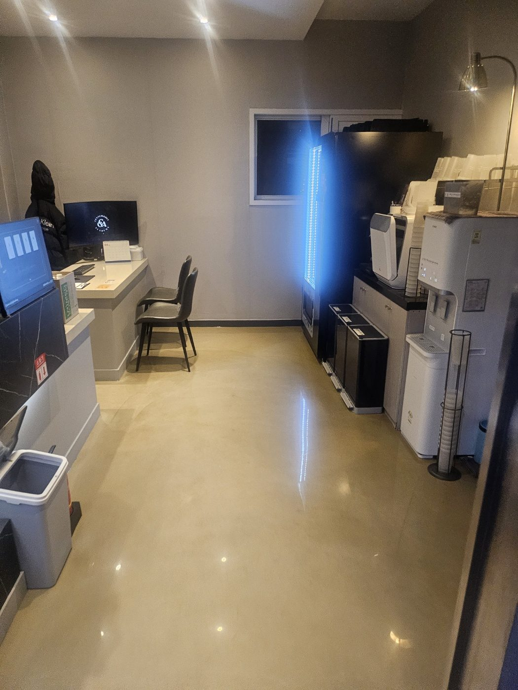
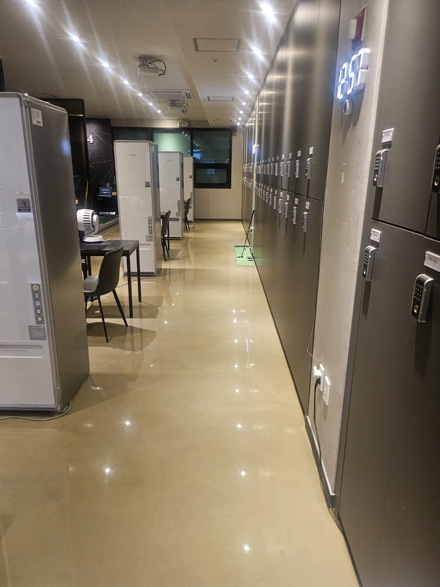
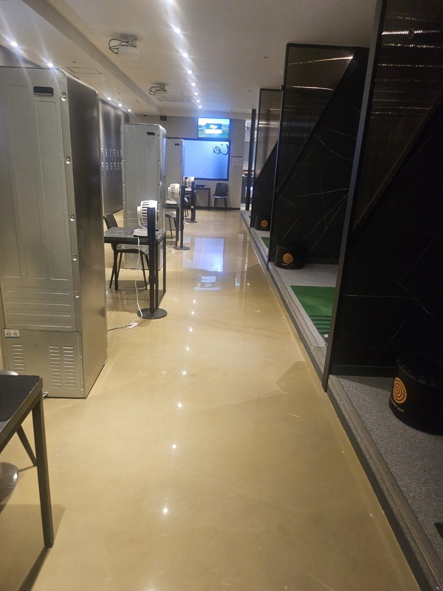
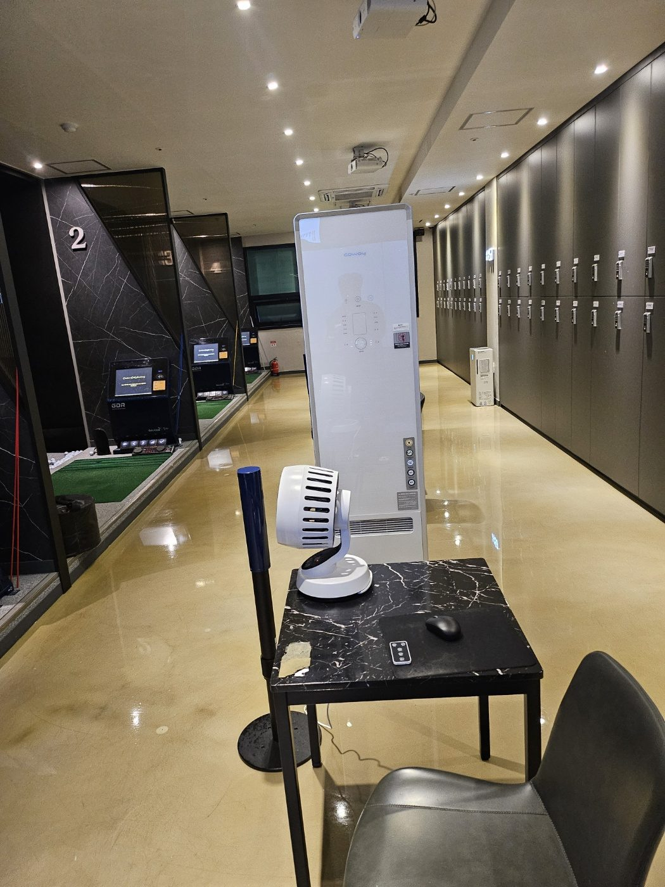
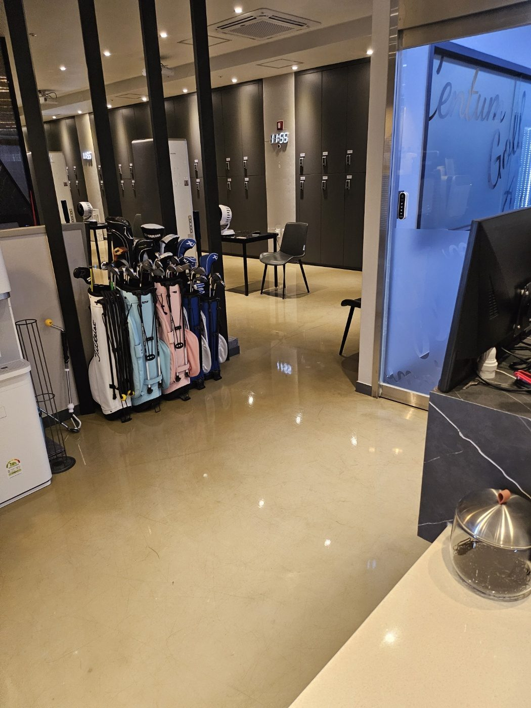
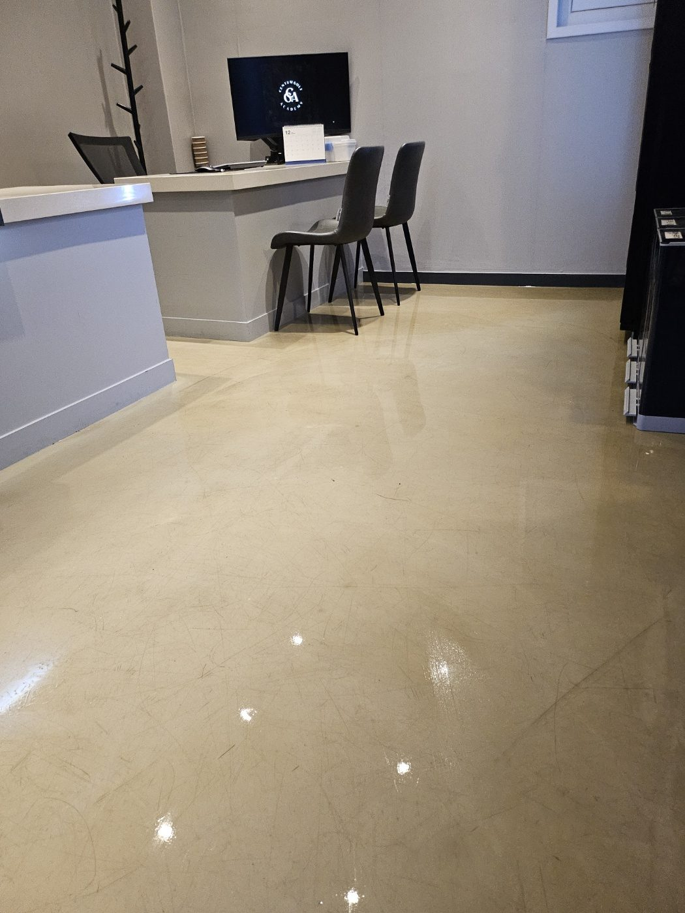
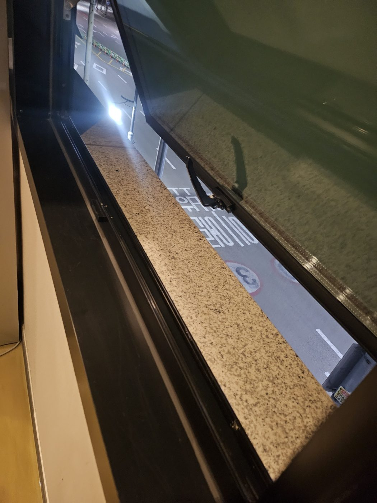

GIMHAE SCREEN GOLF CLEANING
김해 스크린골프장 정기청소 | 타석·락커·바닥 관리
스크린골프장은 신발 먼지와 잔먼지가 타석 앞 통로, 락커 주변, 상담대와 휴게공간으로 쉽게 퍼집니다. 바닥 광택이 있는 공간은 작은 얼룩도 눈에 잘 보여 영업 전후로 일정한 관리 품질을 유지하는 것이 중요합니다.
스크린골프장 정기청소 관리 포인트
타석 수, 방문객 수, 락커와 공용부 면적, 운영시간, 바닥 재질과 휴게공간 사용량을 확인해 정기청소 범위와 횟수를 정합니다.
타석 수, 방문객 수, 락커와 공용부 면적, 운영시간, 바닥 재질과 휴게공간 사용량을 확인해 정기청소 범위와 횟수를 정합니다.
김해 스크린골프장·상가 청소 상담 지역
내외동·삼계동·장유·율하·주촌·진영 등 상가와 생활권을 중심으로 스크린골프장, 헬스장, 샤워실과 공용부 정기청소를 상담합니다.
내외동·삼계동·장유·율하·주촌·진영 등 상가와 생활권을 중심으로 스크린골프장, 헬스장, 샤워실과 공용부 정기청소를 상담합니다.

상담대 주변 바닥 관리
프런트와 상담대 주변은 이용객이 가장 먼저 마주하는 공간이어서 바닥의 먼지와 얼룩을 정리해 깔끔한 인상을 유지합니다.

락커 앞 긴 통로 정리
락커 앞 통로는 왕래가 많아 미세먼지와 신발 자국이 빠르게 누적되므로 길게 이어지는 동선을 기준으로 관리합니다.

타석과 공용부 연결 동선 관리
타석 구역과 공용부 사이에는 골프백과 이용객 이동이 반복돼 모서리와 통로에 먼지가 모이기 쉽습니다.

휴게 테이블 주변 바닥 점검
휴게 테이블과 의자 주변은 가구 다리 아래까지 확인해 잔먼지가 남지 않도록 정리합니다.

골프백 보관 구역 주변 정리
골프백 보관 공간은 바닥 중앙뿐 아니라 장비 뒤편과 벽면 쪽까지 함께 확인합니다.

프런트 앞 바닥 마감 확인
프런트 앞 바닥은 조명 반사가 잘 보이는 구역이라 작업 후 얼룩과 잔여 수분을 다시 확인합니다.

창틀과 먼지 유입 구간 점검
창틀은 외부 먼지가 유입되는 지점이므로 정기청소 때 바닥과 함께 확인하면 실내 먼지 재유입을 줄이는 데 도움이 됩니다.
김해 청소 무료 방문견적
현장 규모, 이용 인원, 운영시간, 오염 정도와 관리 범위를 확인한 뒤 무료 방문견적으로 안내합니다. 정기청소는 현장 상황에 따라 주 1회부터 주 6회까지 상담 가능합니다.
무료 방문견적 요청010-7246-5626